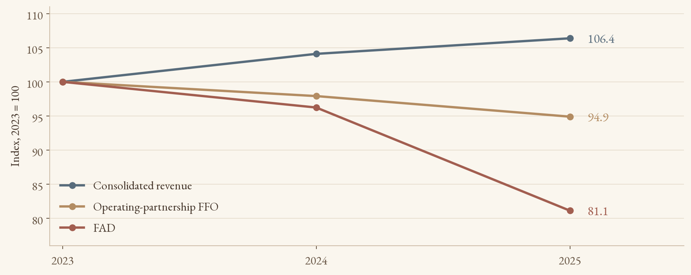
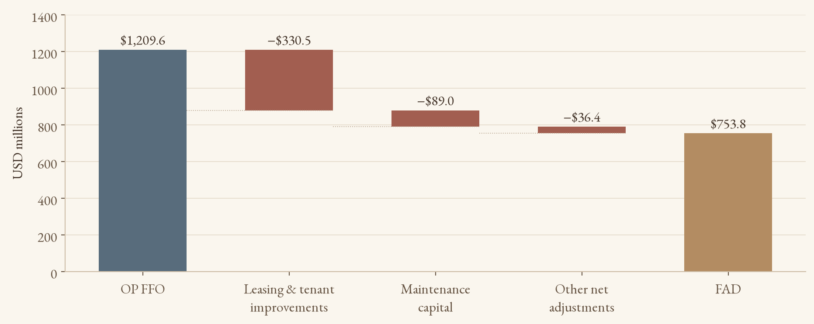
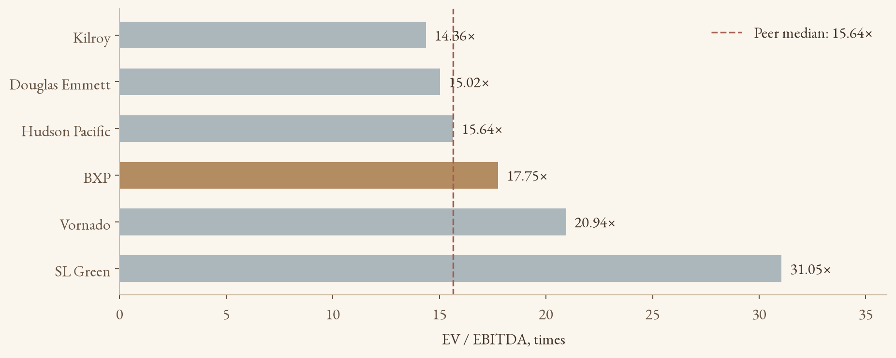
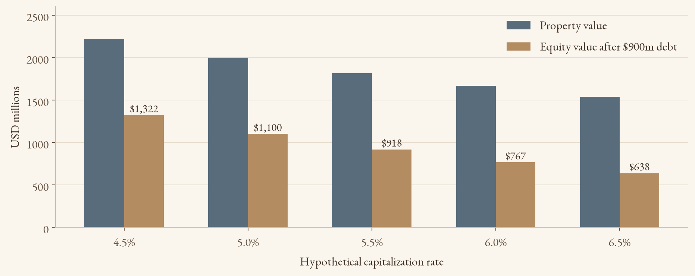
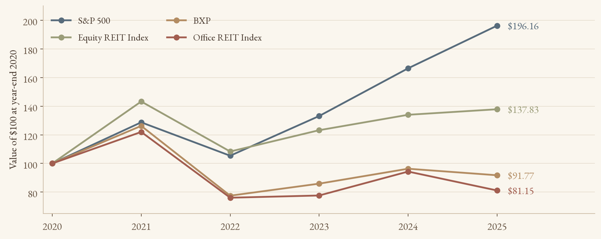

Boston Properties: Skyline or Decline? Revenue growth, cash retention, and the limits of a peer-multiple valuation
By Yongjin (Jin) Hwang
Historical financial review: fiscal years 2023–2025. Development context: selected disclosures through July 28, 2026. Peer multiples: undated presentation snapshot, not current market quotations. This article does not incorporate every subsequent filing or provide a current price target.
Growing rent revenue does not guarantee more distributable cash
Boston Properties, now operating as BXP, offers a useful case study in the economics of office real estate. Its buildings can generate recurring rental revenue while still requiring substantial cash to retain tenants, maintain competitive space, and finance development. That distinction sits at the center of this analysis: investors need to evaluate the cash retained after those obligations, alongside reported revenue and accounting earnings.
The presentation’s strongest finding is the divergence between the top line and funds available for distribution, or FAD. Consolidated revenue increased from $3.274 billion in 2023 to $3.482 billion in 2025, a 6.4% cumulative rise. Over the same period, the FAD series declined from $928.9 million to $753.8 million, or 18.9%. Operating-partnership FFO fell more modestly, by 5.1%. The widening gap between FFO and FAD therefore deserves more attention than revenue growth alone. [1, 2]
My interpretation is cautious rather than categorically bearish. A premier office portfolio may benefit from demand for well-located, high-quality space. However, property quality creates shareholder value only when rent, occupancy, and development income compensate for the associated capital requirements. Similar trading multiples to other office landlords do not establish that this compensation is sufficient.
Central finding: cash available for distributions weakened even as consolidated revenue increased.

The leasing model provides recurring income and recurring obligations
BXP develops, owns, leases, and manages property. Multi-year leases can provide visibility, but that visibility has a cost: landlords may fund tenant improvements, pay leasing commissions, offer concessions, and invest in common areas or building systems. A signed lease, an occupied building, and cash rent collection can occur at different times. They should not be treated as interchangeable operating milestones.
The deck discusses Boston, New York, San Francisco, and Seattle. BXP’s broader portfolio also includes other markets, so those examples should not be read as a complete geographic inventory. The relevant investment question is how local demand, tenant concentration, lease expirations, and capital commitments interact within the actual portfolio. A large headline market capitalization does not answer that question.
In 2025, lease revenue of $3.236 billion represented approximately 92.9% of consolidated revenue. Parking and other revenue contributed $143.3 million, or 4.1%. The remaining approximately 3.0% comprised hotel revenue, development and management services, and reimbursements. This dependence on leasing is normal for an office landlord. The analytical concern is the durability and cash profitability of those leases, rather than the absence of a property-trading business. [1]
Consolidated net income rebounded from $84.2 million in 2024 to $384.0 million in 2025, raising the consolidated net margin from 2.5% to 11.0%. This is not the same as income attributable to BXP shareholders: the company reported $276.8 million attributable to BXP, Inc. for 2025. The distinction matters because consolidated earnings also include interests held by other investors. [1, 3]
The rebound also reflects items beyond recurring rent collection. The consolidated statements show approximately $176.7 million of real estate sale gains in 2025, versus $0.6 million in 2024, and a $239.6 million narrowing of losses from unconsolidated joint ventures. These items help explain the earnings recovery. They do not, by themselves, establish stronger recurring distribution capacity.
The 11.0% margin is a consolidated accounting measure, not a measure of cash distributable to common shareholders.
Leasing costs are absorbing more of FFO
Funds from operations, or FFO, adjusts GAAP net income for real-estate depreciation and certain other items, including qualifying property-sale gains. Nareit developed the measure because historical-cost depreciation can obscure comparisons between property businesses. FFO remains a supplemental performance measure, rather than cash from operations or unrestricted cash available for dividends. [4]
For consistency, this article uses the presentation’s operating-partnership FFO series, which includes BXP and outside common unitholders. It should not be mixed with the lower FFO attributable solely to BXP, Inc. common shareholders. The FAD and distribution series likewise cover common shareholders and common unitholders. [1, 2]
FAD moves closer to the distribution question by reflecting additional adjustments and recurring capital demands. In the deck’s rounded reconciliation, leasing commissions and tenant improvements increased from $222.8 million in 2023 to $330.5 million in 2025. Maintenance capital spending increased from $75.8 million to $89.0 million. Together, these categories rose from 23.4% to 34.7% of the stated FFO base.
That arithmetic explains most of the FAD contraction. Between 2023 and 2025, FFO fell $64.9 million while the two capital categories increased $120.9 million. An approximately $10.7 million offset from the remaining net adjustments brought the total FAD decline to $175.2 million. These are reconciliations of the deck’s rounded categories, not an assertion that every movement has a single economic cause.
Regular distributions declined from $688.3 million in 2023 to $594.4 million in 2025. Nevertheless, distributions divided by FAD rose from 74.1% to 78.9%, because FAD fell faster. Coverage tightened from approximately 1.35 times to 1.27 times, and the residual after regular distributions fell from $240.6 million to $159.4 million. That residual is a distribution cushion within this measure. It is not cash free of development, financing, or other obligations.
A higher payout ratio here accompanies lower distributions and a smaller cash cushion. It is not evidence of dividend growth.

A middle-of-the-pack multiple is not a fair-value estimate
The presentation’s peer table includes Vornado, SL Green, Kilroy, Douglas Emmett, Hudson Pacific, and BXP. Its quote date and trailing financial measurement dates are not specified. I therefore retain the table as a historical research snapshot and avoid treating its prices, enterprise values, or multiples as current trading data.
BXP’s stated EV/EBITDA is 17.75 times. Using the five other companies as the peer group, the arithmetic mean is 19.40 times and the median is 15.64 times. BXP sits 8.5% below the peer mean but 13.5% above the peer median. The deck’s 19.13-times average and 16.70-times median include BXP itself. Those figures describe the six-company sample rather than a benchmark independent of BXP.
The choice of statistic changes the interpretation. A discount to the mean does not imply a discount to the typical peer when a relatively high multiple pulls the average upward. SL Green’s 31.05-times EV/EBITDA is particularly influential in this small sample. Portfolio geography, occupancy, leverage, joint-venture exposure, and required capital spending may also justify different multiples.
EV/EBIT introduces an additional complication: depreciation creates a large wedge between EBITDA and EBIT. Hudson Pacific’s reported negative EBIT makes its EV/EBIT economically unhelpful as a valuation benchmark. For the other four peers, the mean is 68.59 times and the median is 54.98 times, compared with BXP’s 41.97 times. Excluding a negative denominator is necessary for interpretation, but the remaining high and dispersed multiples still require caution.
A more complete valuation would pair enterprise metrics with comparable FFO or AFFO measures, recurring leasing costs, debt and joint-venture obligations, and a property-level net asset value analysis. FAD definitions also require reconciliation across companies. This snapshot supports relative observations, not a defensible buy recommendation or a specific intrinsic value.
BXP screens below the peer mean and above the peer median on EV/EBITDA. Both statements can be true.

Leverage amplifies a change in property capitalization rates
Higher market interest rates can affect a landlord through several channels. Refinancing can become more expensive as debt matures. Buyers may demand higher property yields, pressuring asset values. Development financing can become harder to justify against expected rents. Fixed-rate debt can delay the interest-expense effect, but it does not remove refinancing risk or protect the equity value from changes in asset pricing.
A simple capitalization-rate exercise illustrates the valuation mechanism. Assume a hypothetical property generates $100 million of annual net operating income and carries $900 million of debt. At a 5.0% capitalization rate, property value equals $2.0 billion and residual equity equals $1.1 billion. At 6.0%, property value falls to $1.667 billion and residual equity falls to $766.7 million.
The property-value decline is 16.7%, while the equity-value decline is 30.3%. Debt remains fixed in this illustration, concentrating the valuation loss in equity. This example does not estimate BXP’s NAV. It ignores taxes, transaction costs, ownership structure, changes in NOI, and other assets and liabilities. It also does not assume that policy rates and property capitalization rates move one-for-one.
The original presentation links BXP’s 2022 weakness to rising interest rates. That is a plausible channel, but its annual equity beta cannot isolate the causal effect of rates. A low beta measures limited co-movement with the selected equity benchmark over the estimation window. It does not establish low exposure to bond yields, property fundamentals, or refinancing conditions.
A stronger empirical design would estimate BXP’s return against both an equity-market factor and changes in relevant Treasury yields, with consistent return frequencies and an office-REIT benchmark. Sector conditions, the timing of leases, and company-specific announcements would still matter. This article therefore treats rate sensitivity as an economic mechanism rather than a causal result proven by the deck.
The scenario isolates leverage. It is an illustration, not a BXP forecast or a property appraisal.

BXP lagged the broad market, but the sector comparison matters
BXP’s annual report provides a clearer long-horizon comparison than the deck’s incompletely documented risk-adjusted ratios. With dividends reinvested, an initial $100 at year-end 2020 became $91.77 in BXP by year-end 2025, versus $196.16 in the S&P 500, $137.83 in the Equity REIT Index, and $81.15 in the Office REIT Index. The result shows substantial broad-market underperformance alongside better performance than the office-sector benchmark. [1]
The 2025 comparison is particularly important. The annual-report series implies approximately -4.7% for BXP and -14.0% for the Office REIT Index, versus +17.9% for the S&P 500. A positive broad-market year does not mean that office real estate faced favorable conditions. BXP’s 2025 decline alone cannot establish that its problems were entirely company-specific.
The source presentation reports annual Sharpe, Treynor, and Jensen-alpha estimates, but it does not supply the full return observations, volatility calculations, risk-free-rate convention, or a reproducible estimation procedure. Mixing SPY returns, index returns, and different dividend conventions can also change the results. I therefore omit those point estimates from the published charts.
The underlying lesson survives that omission. An absolute gain can coexist with opportunity-cost underperformance, and comparison with a broad equity index answers a different question from comparison with direct property-sector peers. A credible assessment should show both, with matching dates and a clearly stated total-return convention.
The benchmark changes the story: BXP underperformed the S&P 500 over 2021–2025 while outperforming the Office REIT Index.

Pre-leasing reduces uncertainty without eliminating execution risk
The deck points to several projects that could influence future earnings. Dated company disclosures help distinguish completed space from future opportunity. In its second-quarter 2026 release, BXP reported placing 290 Binney Street in service, with the Cambridge life-sciences building fully leased to AstraZeneca. It also reported commencing the redevelopment of Reservoir Place, which was 89% pre-leased to Boston Dynamics. These are different projects and tenants. [5]
The same release disclosed a $1.2 billion construction loan for 343 Madison Avenue dated July 28, 2026. Financing can reduce the immediate equity funding requirement, but it does not guarantee future rents, project returns, or a valuation increase. Borrowing may finance an asset under construction while also increasing debt. Its effect on enterprise value or equity value is not mechanically determined by the loan amount.
Depreciation begins when relevant assets enter service under the applicable accounting treatment, while financing and leasing cash flows follow their own schedules. That is why a project can improve occupancy or future rent visibility without immediately translating into FAD growth. For a project still in planning, a distant completion estimate should carry less weight than funded construction, signed leases, and actual rent commencements.
The bullish case would strengthen if rent commencements lift recurring earnings, leasing expenditure normalizes, and new developments earn satisfactory returns after financing costs. Evidence would include better occupied space, cash rent growth, stronger FAD conversion, and a wider distribution cushion. Sales can support liquidity, but realized gains should remain distinct from repeatable property earnings.
The bearish case would strengthen if retaining tenants requires persistently elevated cash outlays, refinancing consumes more income, or development absorbs capital without sufficient returns. Stable revenue would then conceal limited improvement in the cash economics of the portfolio.
My conclusion is that BXP warrants analysis through cash retention and required reinvestment, rather than a simple skyline-quality argument or a peer-multiple shortcut. The 2023–2025 evidence shows a smaller distribution cushion despite revenue growth. The development pipeline offers a possible route to improvement, but a stronger investment conclusion requires dated market inputs, a reproducible cash-flow forecast, and an explicit valuation model.
Research conclusion: monitor whether operating progress improves cash retained after leasing and maintenance costs.
METHODS AND SCOPE
All dollar amounts are U.S. dollars. Financial tables and charts use millions unless explicitly stated otherwise. Revenue and net income are consolidated. FFO is attributable to operating-partnership common unitholders, including BXP. FAD and regular distributions use the deck’s common-shareholder and common-unitholder series.
Charts 1–3 reconstruct the supplied presentation’s data. Chart 2 uses rounded leasing and maintenance categories and computes the remaining net deduction as a residual. This prevents a rounded reconciliation from being mistaken for an audited breakdown. Peer means and medians exclude BXP and use the displayed multiples; negative EBIT is excluded only from the EV/EBIT benchmark.
Chart 4 is an explicitly hypothetical sensitivity analysis. Chart 5 uses the total-return index values in BXP’s 2025 Form 10-K, including reinvested dividends. It replaces the deck’s less fully documented annual-return calculations. Figures may differ slightly from the deck because of rounding and benchmark conventions.
This is an independent undergraduate research article adapted from the author’s presentation. No current institutional membership or endorsement is asserted. It is educational analysis, not personalized investment advice. No share-price target or current buy/sell recommendation is presented.
SOURCES
[1] BXP, Inc. and Boston Properties Limited Partnership, 2025 Form 10-K https://www.sec.gov/Archives/edgar/data/1037540/000103754026000006/bxp-20251231.htm Consolidated income statements, operating-partnership FFO reconciliation, and total-return comparison. Fiscal years end December 31.
[2] Author’s underlying presentation and BXP distribution disclosures https://investors.bxp.com/static-files/c0bfcbe3-b658-4745-a653-127cacae7784 The supplied presentation provides the 2023–2025 FAD series, regular distributions, rounded capital-spending categories, and undated peer snapshot. Linked BXP supplement corroborates the 2023–2024 FAD and distribution figures; BXP’s 2025 annual report reports $753.8 million of annual FAD. Rounded category differences are calculated by the author.
[3] BXP, Fourth Quarter and Full Year 2025 Results, January 27, 2026 https://investors.bxp.com/news-releases/news-release-details/bxp-announces-fourth-quarter-and-full-year-2025-results/ Income and FFO attributable to BXP, Inc., as distinct from consolidated income or operating-partnership FFO.
[4] Nareit, Funds From Operations definition https://www.reit.com/glossary/funds-operation-ffo Industry definition of FFO and its role as a supplemental operating-performance measure.
[5] BXP, Second Quarter 2026 Results, July 28, 2026 https://investors.bxp.com/news-releases/news-release-details/bxp-announces-second-quarter-2026-results/ Selected project, leasing, and construction-financing updates. These are dated disclosures, not assertions of current project status.
[6] BXP 2025 Annual Report https://investors.bxp.com/static-files/9b0b967a-182c-4664-a541-d8510371a8cf Annual-report quick facts include annual FAD of $753.8 million. Detailed reconciliation categories in this article follow the supplied presentation.